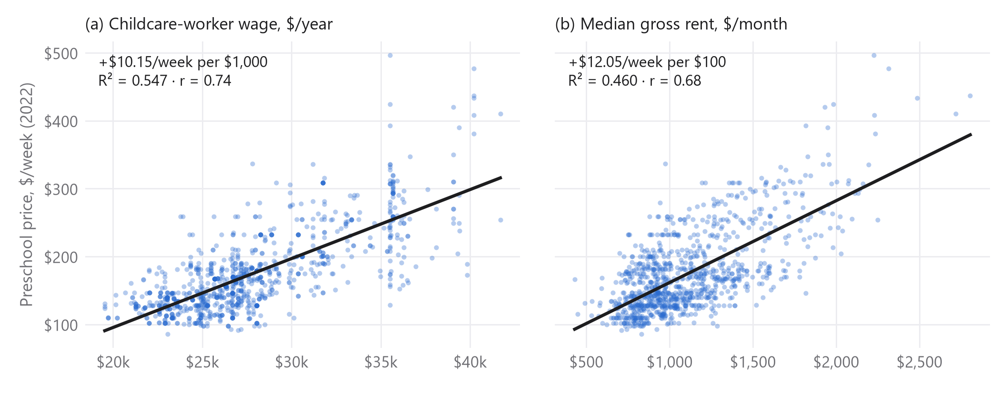
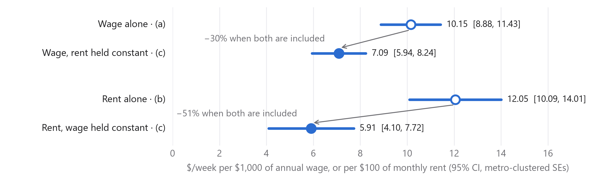
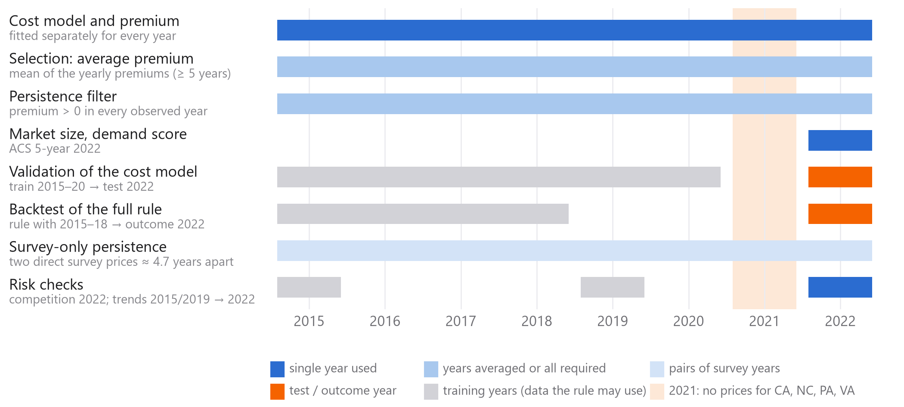
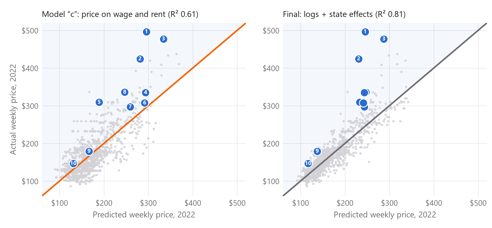
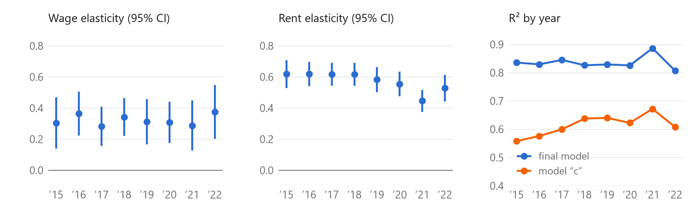
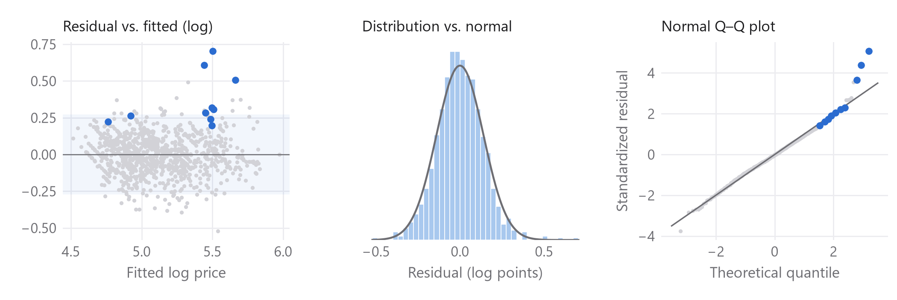
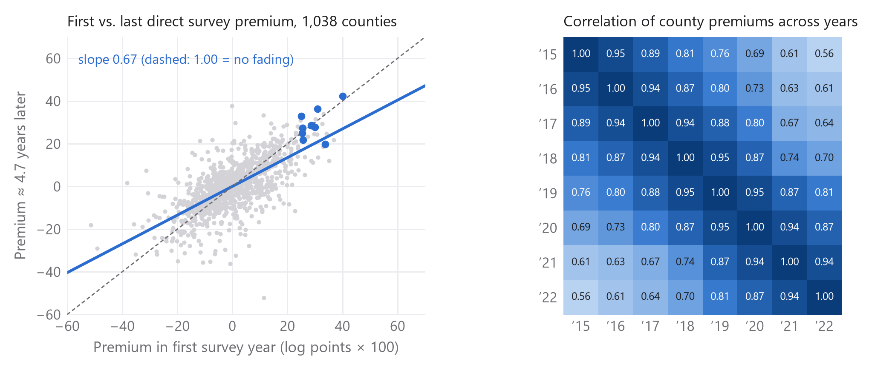

| Rank | County | Metro area | Average premium 2015–22 | Expected premium | Children needing care | Score |
|---|---|---|---|---|---|---|
| 1 | Arlington, VA | Northern Virginia | +61% | +37% | 11,577 | 0.83 |
| 2 | Alexandria, VA | Northern Virginia | +50% | +31% | 8,813 | 0.77 |
| 3 | San Francisco, CA | San Francisco | +36% | +23% | 30,027 | 0.72 |
| 4 | Loudoun, VA | Northern Virginia | +35% | +22% | 22,329 | 0.70 |
| 5 | Olmsted, MN | Rochester | +33% | +21% | 9,533 | 0.60 |
| 6 | Fairfax, VA | Northern Virginia | +30% | +19% | 57,257 | 0.50 |
| 7 | Multnomah, OR | Portland | +32% | +20% | 32,227 | 0.45 |
| 8 | Howard, MD | Baltimore | +32% | +20% | 16,287 | 0.42 |
| 9 | Hall, GA | Gainesville | +33% | +21% | 9,215 | 0.40 |
| 10 | Sullivan, TN | Kingsport | +28% | +18% | 5,603 | 0.12 |
Premium = how much the county's preschool price exceeds the price predicted from its childcare-worker wage and rent, compared with counties in the same state (Appendix B). Expected premium = the average premium after the typical fading of premiums over about five years (Appendix D). Score = 50% premium rank + 50% demand rank among the ten (Appendix D).
| Part | Content | Slide |
|---|---|---|
| Pre | Pre-analysis tasks 1–4: analysis dataset, descriptives, scatter plots, regressions (model “c”) | 2 |
| 0 | From our ideas to measurable steps; which years enter which analysis | – |
| A | Data sources, variables, samples and every data-handling decision | all |
| B | Cost model: from model “c” to the final model; fit and residuals | 2 |
| C | Out-of-sample validation of the cost model | 2 |
| D | Team decisions, selection rule, candidates, score, market characteristics; stability | 3, 5 |
| E | Reliability: backtest, robustness, portfolio view, statistical checks, data quality | 4 |
| F | What the model does not see: risk flags, public pre-K, the Northern Virginia cluster, other candidates | 6 |
| G | Limitations and reproducibility (scripts, data, checks, AI use) | – |
Team boxes contain the team's own interpretations and decisions (decisions were taken after the options and evidence were laid out; Appendix D). Data work, statistics and drafts of the text were produced with an AI tool (Claude Code, Python) at our direction; all prompts are documented in the prompt log submitted with the code. Beyond course scope marks methods that go beyond the course.
Before searching for markets, establish how strongly childcare prices move with the two main costs of a center, staff wages and rent. The resulting model “c” is the starting point of our selection (Appendix B).
Task. Merge NDCP county prices to the year × county cost/demand file from Problem Set 5, then define the analysis dataset as year × county observations where prices and predictor variables are non-missing.
| Year | Metro county-years | No NDCP price | Price, no wage | Missing ACS | Analysis dataset | Kept |
|---|---|---|---|---|---|---|
| 2015 | 1,233 | 230 | 8 | 1 | 994 | 80.6% |
| 2016 | 1,233 | 208 | 6 | 0 | 1,019 | 82.6% |
| 2017 | 1,234 | 171 | 6 | 0 | 1,057 | 85.7% |
| 2018 | 1,233 | 170 | 1 | 0 | 1,062 | 86.1% |
| 2019 | 1,235 | 172 | 2 | 0 | 1,061 | 85.9% |
| 2020 | 1,235 | 172 | 13 | 0 | 1,050 | 85.0% |
| 2021 | 1,235 | 317 | 12 | 1 | 905 | 73.3% |
| 2022 | 1,235 | 222 | 7 | 8 | 998 | 80.8% |
| Total | 9,873 | 1,662 | 55 | 10 | 8,146 | 82.5% |
Missing NDCP prices are the main reason for exclusion and are concentrated in a few states (2022: Puerto Rico, Indiana, Pennsylvania, Missouri, Arkansas). In 2021 NDCP has no prices for CA, NC, PA and VA. Missing ACS in 2022: the Connecticut counties (planning-region change).
Task. Make a table of mean / SD / number of observations for all variables in the analysis dataset for 2022.
| Variable (2022, metro counties, 2022 $) | Mean | SD | N | Source |
|---|---|---|---|---|
| Outcome: childcare price | ||||
| Preschool price, center-based median ($/week) | 174.48 | 59.75 | 998 | NDCP MCPRESCHOOL |
| Infant price, center-based median ($/week) | 214.03 | 82.62 | 997 | NDCP MCINFANT |
| Toddler price, center-based median ($/week) | 185.47 | 65.47 | 996 | NDCP MCTODDLER |
| Costs | ||||
| Childcare-worker mean annual wage ($) | 27,780.47 | 4,350.79 | 998 | OEWS SOC 39-9011 |
| Median gross rent ($/month) | 1,105.97 | 336.40 | 998 | ACS B25064_001E |
| Demand | ||||
| Per-capita income ($/year) | 37,859.09 | 9,457.05 | 998 | ACS B19301_001E |
| Total population | 255,803.00 | 551,110.38 | 998 | ACS B01001_001E |
| Own children under 6 | 17,151.19 | 37,250.04 | 998 | ACS B23008_002E |
| Under 6, all resident parents in labor force | 11,537.89 | 24,539.44 | 998 | ACS B23008_004E+010E+013E |
| Share of women 25+ with bachelor's or higher | 0.3062 | 0.1106 | 998 | ACS B15002 |
| Share of women 16-64 full-time year-round | 0.4462 | 0.0559 | 998 | ACS B23022 |
| Share of population under 6 | 0.0644 | 0.0114 | 998 | kids_under6 / pop_total |
| Share of population under 6 needing care | 0.0432 | 0.0090 | 998 | kids_under6_allpar_lf / pop_total |
Unweighted county statistics. Infant and toddler prices are shown for context (not part of the complete-case definition). The sample excludes counties without NDCP prices, mainly lower-cost areas (no Puerto Rico counties remain), so cost and income means are above those for all metro counties (Problem Set 5: wage $27,373, rent $1,052).
Task. Make scatter plots of childcare prices against (a) childcare-worker wages and (b) rents, with the fitted line from a linear regression. How do you interpret these?

| Bivariate OLS, 2022 | Fitted line | Slope (readable units) | R² | Correlation |
|---|---|---|---|---|
| (a) Wage | −107.59 + 0.01015 × wage | +$10.15/week per $1,000 | 0.547 | 0.739 |
| (b) Rent | 41.17 + 0.1205 × rent | +$12.05/week per $100 | 0.460 | 0.679 |
Both plots show a strong relationship between childcare prices and operating costs.
Childcare worker wage
Counties with higher childcare workers' wages tend to have higher weekly preschool prices. A $1,000 increase in annual worker wages corresponds with a $10.15 increase in weekly childcare prices. The R² indicates that the wages explain 54.7% of the variation in childcare prices.
Rent
Counties with higher median monthly rents tend to have higher childcare prices. A $100 increase in monthly rent is associated with an increase of about $12.05 in weekly childcare prices. The R² indicates that rent alone explains 46% of the variation in childcare prices.
Wages have a stronger relationship with childcare prices than rent, based on the respective R². The two plots show considerable variation around the line, meaning that even with similar costs the childcare prices can vary. That is especially visible in the vertical clusters around, for example, $35,000. The findings suggest both are important predictors of childcare prices, but there are other factors at play. Wages and rents are also correlated with each other (r = 0.67), since expensive metro areas tend to have both, so each line partly reflects the other cost.
Task. Using 2022 data, regress median preschool price on (a) wages alone, (b) rent alone, and (c) wages and rent together. Interpret the coefficients in each, and explain any changes in the wage/rent coefficients between the univariate and multivariate specifications.
Model “c”: Pricei = a + b1·Wagei + b2·Renti + ei
| Dependent variable: preschool price ($/week) | (a) Wage | (b) Rent | (c) Wage + rent |
|---|---|---|---|
| Wage (per $1,000/year) | 10.153 (0.647) | – | 7.093 (0.584) |
| Rent (per $100/month) | – | 12.053 (0.996) | 5.910 (0.922) |
| Intercept | −107.587 (17.103) | 41.173 (9.797) | −87.946 (13.017) |
| R² | 0.547 | 0.460 | 0.608 |
| Residual SD ($/week) | 40.26 | 43.91 | 37.47 |
| N (metro clusters) | 998 (330) | 998 (330) | 998 (330) |
Standard errors in parentheses, clustered by metro area. All slope coefficients p < 0.0001. The same 998 counties in all three models.

Omitted-variable decomposition (exact). Rent rises on average by 0.518 × $100 per $1,000 of wage, and wage by 0.866 × $1,000 per $100 of rent (r = 0.67). Hence bwage(a) = 7.093 + 5.910 × 0.518 = 10.153 and brent(b) = 5.910 + 7.093 × 0.866 = 12.053, exactly the single-regression coefficients. Holding rent constant, moving a county from the 25th to the 75th percentile of wages raises the predicted price by $35.82/week; the same move in rent adds $23.92/week. The intercepts are not interpretable on their own (a wage or rent of $0 is far outside the data).
| Robustness: SE of the slope | OLS | Metro-clustered (used) | State-clustered | p, state-clustered |
|---|---|---|---|---|
| (a) wage alone | 0.293 | 0.647 | 0.660 | 4.4e-19 |
| (b) rent alone | 0.413 | 0.996 | 0.936 | 2.4e-16 |
| (c) wage, rent held constant | 0.367 | 0.584 | 1.052 | 3.0e-08 |
| (c) rent, wage held constant | 0.475 | 0.922 | 1.059 | 1.5e-06 |
The regressions show that both childcare worker wages and rent have a positive and significant relationship with weekly preschool prices.
In “a”, a $1,000 increase in annual worker wages corresponds with a $10.15 increase in weekly childcare prices.
In “b”, a $100 increase in monthly rent is associated with an increase of about $12.05 in weekly childcare prices.
In “c”, when wages and rent are both included, their coefficients become smaller compared to their individual coefficients. Holding rent constant, a $1,000 increase in annual wages is associated with a $7.09 increase in weekly preschool prices. Similarly, holding wages constant, a $100 increase in monthly rent is associated with a $5.91 increase in weekly prices.
Both variables are positively correlated with r = 0.67, meaning that counties with higher wages also tend to have higher rents. Because wages and rent are positively correlated, the coefficient in each single regression also captures part of the effect of the other, omitted cost (omitted-variable bias). Once both are included, each coefficient only measures its own effect, so both become smaller. The R² also increases to 0.608 in model “c”, meaning that wages and rent together explain about 61% of the variation in childcare prices. This is an improvement over either model alone, although approximately 39% of the variation remains unexplained.
Our selection follows six guiding ideas the team set at the start of the project. The table shows how each idea was turned into a measurable step, which data it uses, and where the evidence is.
| Our idea | How we measured it | Data | App. |
|---|---|---|---|
| Find counties where prices are unusually high relative to costs (wages and rent). | Cost model: predict each county's price from its childcare-worker wage and rent, within its state; premium = actual vs. predicted price. | NDCP prices, BLS OEWS wages, ACS rents, 2015–2022 | B, C |
| The advantage must have lasted over time. | Rank on the average premium over all observed years (≥ 5); require a positive premium in every year; measure how much of a premium survives. | Yearly premiums 2015–2022; direct NDCP survey years | D |
| Prioritize places with strong childcare demand. | Market-size filter (≥ 4,286 children under 6 whose parents all work) and a demand score (children needing care, their share of the population, income). | ACS 5-year 2022 | D |
| Start with a top 20, then add factors to get to the top 10. | Candidate pool = 20 largest average premiums; then persistence, market size and the score. | Selection rule, Appendix D | D |
| Test the approach with historical data to build the best predictive model. | Out-of-sample validation of the cost model; backtest of the complete rule as if decided in 2018; robustness to each design choice. | 2015–2018 → 2022; 2015–2020 → 2022 | C, E |
| Look beyond the model before investing. | Five local risk checks: competition, child-population trend, wage and rent growth, free public pre-K. | Census CBP 2022; ACS; OEWS; state/county pre-K rules | F |
The rule never uses information from after the year it is tested on: the backtest decides with 2015–2018 data only and is judged on 2022; the validation of the cost model fits 2015–2020 and predicts 2022.

Use only official, county-level public data that a provider could also use, keep one consistent sample for every model, and document every choice that changes which observations enter.
| Source | What we use | Geography | Years |
|---|---|---|---|
| National Database of Childcare Prices (NDCP), U.S. Department of Labor | Median weekly full-time price of center-based preschool care (MCPRESCHOOL), imputation codes | County | 2015–2022 |
| Occupational Employment and Wage Statistics (OEWS), BLS | Mean annual wage of childcare workers (SOC 39-9011); preschool teachers (25-2011) for robustness | Metro area → its counties | 2015–2022 |
| American Community Survey 5-year (ACS), Census API | Median gross rent, children under 6, children whose resident parents all work, population, per-capita income | County | 2015–2022 |
| CPI-U (CUUR0000SA0), BLS | Annual average; converts all dollar values to 2022 dollars | U.S. | 2015–2022 |
| County–OEWS crosswalk, course package | Year-specific link of counties to OEWS areas; metro = area code starting with 00 | County | 2015–2022 |
| County Business Patterns (CBP), Census API | Child day care establishments and employees (NAICS 624410) | County | 2016, 2019, 2022 |
| Gazetteer and cartographic boundaries, Census | County internal points, state and county outlines (maps only) | County | 2022 |
| Public pre-K program rules, state and county agencies | Eligibility and scope of free public pre-K (sources in Appendix F) | County / state | accessed Oct 2026 |
| Variable | Definition and source code | Unit | Used for |
|---|---|---|---|
| Price | NDCP MCPRESCHOOL × CPI factor | $/week, 2022 $ | Cost model (dependent variable) |
| Childcare-worker wage | OEWS A_MEAN, SOC 39-9011, metro area | $/year, 2022 $ | Cost model |
| Rent | ACS B25064_001E median gross rent | $/month, 2022 $ | Cost model |
| Children needing care | ACS B23008_004E + 010E + 013E (under 6, all resident parents in the labor force) | children | Market-size filter, demand score |
| Care-need share | children needing care / ACS B01001_001E population | share | Demand score |
| Income per capita | ACS B19301_001E | $/year, 2022 $ | Demand score |
| Premium (within state) | exp(residual) − 1 of the final cost model, per year | % | Selection, stability |
| National premium | same model without state effects | % | Robustness filter (> 0) |
| Direct survey year | 5th digit of the NDCP imputation code = 0 (not interpolated) | flag | Survey-only persistence, data quality |
| Center density | CBP establishments per 1,000 children needing care | per 1,000 | Risk check (competition) |
Analysis dataset (pre-analysis task 1): 8,146 metro county-years with the preschool price and all predictors non-missing; sample flow by year in Task 1.
Selection sample. Of the 1,159 counties with at least one year in the analysis dataset, 998 are in the 2022 data, 972 of these are observed in at least 5 of the 8 years, and 460 of those also have a positive average national premium. These are the counties eligible for the candidate pool (Appendix D). The 2022 cross-section has 998 counties in 330 metro areas and 44 states including DC.
| Issue | What we did | Why | Effect |
|---|---|---|---|
| Metro sample | County-year is metro if its OEWS area code in the year-specific crosswalk starts with 00 | Assignment definition; wages exist for metro areas | 1,236 counties, 9,873 county-years |
| Wage geography | Every county gets the OEWS wage of its metro area | OEWS publishes no county wages | Counties of one metro share a wage → SEs clustered by metro area |
| Large metros 2015–2017 | Use BLS whole-MSA files (aMSA); metropolitan divisions not used | Crosswalk uses whole-MSA codes | No wage gaps for the 11 largest metros |
| Legacy FIPS | Drop 12025 (Dade) and 51515 (Bedford city) | No longer counties; successors are in the crosswalk | Identical county set across sources |
| Connecticut 2022 | No ACS values for the 8 old counties (ACS 2022 reports planning regions) | Geographies not comparable | CT drops out in 2022 |
| Real dollars | All $ × CPI-U annual average factor to 2022 | Compare years | Prices, wages, rents, income in 2022 $ |
| Complete cases | Keep county-years with price and all predictors non-missing | One consistent sample for every model | 8,146 county-years, 1,159 counties |
| NDCP gaps | 2021: no prices for CA, NC, PA, VA; years kept as missing, not filled | Avoid inventing data | Those counties have 7 of 8 years |
| CA/VA 2022 prices | Kept, but selection uses the 2015–2022 average, not 2022 alone | NDCP extrapolated them (no 2022 survey); nominal change vs. 2020: SF +25%, Marin +37%, Los Angeles −15%, Arlington +21%, Fairfax −7% | Team decision D2 |
| Candidates need a 2022 price | Pool drawn from counties in the 2022 sample | Current market evidence; demand measured in 2022 | 2 counties without 2022 price would otherwise enter (App. D) |
| Identifiers | FIPS, OEWS codes and imputation codes stored as text | Keep leading zeros | Exact joins |
| Raw data | Never edited; SHA-256 checksums of all downloaded files | Reproducibility | data/raw_checksums.sha256 |
If wages and rents explain what childcare should cost in a county, then a county where parents pay far more than that has pricing power: willingness to pay that local costs do not explain. That gap is the premium we look for.
Price = −87.95 + 7.093·wage + 5.910·rent (2022, N = 998, price in $/week, wage per $1,000/year, rent per $100/month; SEs clustered by metro area: 0.584 and 0.922; R² 0.608). Alone, wage has a slope of 10.153 and rent 12.053; both shrink together because wages and rents are correlated (omitted-variable bias, pre-analysis task 4). Model “c” already explains 61% of price differences, but three features of the data argue for refining it:
| Model | Units | Wage | Rent | State effects | R² | N |
|---|---|---|---|---|---|---|
| Model “c”: level | $/week, levels | 7.093 (0.584) | 5.910 (0.922) | – | 0.608 | 998 |
| Log-log | elasticity | 1.111 (0.072) | 0.319 (0.038) | – | 0.580 | 998 |
| Level + state effects | $/week, levels | 2.075 (0.539) | 9.627 (1.124) | yes | 0.801 | 998 |
| Log-log + state effects (final) | elasticity | 0.374 (0.088) | 0.528 (0.043) | yes | 0.807 | 998 |
SEs (in parentheses) clustered by metro area, because counties in one metro area share one OEWS wage. State effects: 43 dummies (44 states incl. DC). With state effects, the wage coefficient falls (2.08 vs. 7.09 in levels): part of the wage effect in model “c” was a state effect. Out-of-sample comparison of all four models: Appendix C.

Final model (estimated separately for each year 2015–2022): log(price) = a + b₁·log(wage) + b₂·log(rent) + state effects. Premium = exp(residual) − 1, i.e. the % by which the actual price exceeds the price predicted for a county with the same wage and rent in the same state. As a robustness requirement, the county's average national premium (same model without state effects) must also be positive, so that we do not pick counties that are merely pricey for a cheap state.
Parents pay $179/week. Model “c” predicts $167 (+7%, an ordinary market). Compared within Georgia, the final model predicts $138, so Hall has a premium of +30%: Georgia's prices are low overall, and Hall is expensive for Georgia.
The final model is fitted separately for each year, so each year's premium is measured against that year's cost relationship. The coefficients are stable: the wage elasticity stays between 0.28 and 0.37, the rent elasticity between 0.45 and 0.62, and R² between 0.81 and 0.89 (model “c”: 0.56–0.67).

| Year | N | States | Wage elast. | Rent elast. | R² final | R² model “c” | Resid. SD (log) |
|---|---|---|---|---|---|---|---|
| 2015 | 994 | 43 | 0.30 (0.08) | 0.62 (0.05) | 0.84 | 0.56 | 0.121 |
| 2016 | 1,019 | 44 | 0.36 (0.07) | 0.62 (0.04) | 0.83 | 0.58 | 0.119 |
| 2017 | 1,057 | 46 | 0.28 (0.06) | 0.62 (0.04) | 0.85 | 0.60 | 0.117 |
| 2018 | 1,062 | 46 | 0.34 (0.06) | 0.62 (0.04) | 0.83 | 0.64 | 0.122 |
| 2019 | 1,061 | 46 | 0.31 (0.07) | 0.58 (0.04) | 0.83 | 0.64 | 0.120 |
| 2020 | 1,050 | 46 | 0.31 (0.07) | 0.55 (0.04) | 0.83 | 0.62 | 0.122 |
| 2021 | 905 | 42 | 0.29 (0.08) | 0.45 (0.04) | 0.89 | 0.67 | 0.114 |
| 2022 | 998 | 44 | 0.37 (0.09) | 0.53 (0.04) | 0.81 | 0.61 | 0.139 |

A model that only fits the data it was estimated on could be over-fitted. We want “the best predictive model possible”, so we judged the candidates by how well they predict prices they have never seen.
Beyond course scope R² measures fit on the estimation sample. Out-of-sample tests hold data back, fit the model on the rest, and measure the typical error on the held-back prices (root mean squared error, RMSE, and mean absolute error, MAE, in $/week):
| Model | R² (2015–20 fit) | RMSE new year | MAE new year | RMSE new metros | MAE new metros |
|---|---|---|---|---|---|
| Model “c”: level | 0.606 | $39.22 | $30.85 | $37.60 | $28.42 |
| Log-log | 0.581 | $39.08 | $30.74 | $37.35 | $27.99 |
| Level + state effects | 0.810 | $33.50 | $26.03 | $29.23 | $20.86 |
| Log-log + state effects (final) | 0.805 | $33.67 | $25.62 | $30.38 | $20.81 |
Reading. Adding state effects reduces the out-of-sample error by about a sixth in both tests; taking logs alone does not. The level and log models with state effects predict about equally well, so we chose the log version (D1) because it measures premiums in percent, comparable between cheap and expensive markets. Both errors refer to prices; the premium of a county is its prediction error by design, so a model that predicts well in general makes a large, persistent residual more meaningful.
Start broad, then narrow down: take the 20 counties with the largest lasting price advantage, keep those whose advantage held every year and whose market is big enough, and rank the rest by price advantage and demand together.
Each decision was taken by the team after the options and the evidence were laid out (the prompts are in the prompt log).
| # | Decision | Alternatives considered | Why |
|---|---|---|---|
| P1 | Readable units: price $/week, wage per $1,000/year, rent per $100/month | Raw dollar units | Coefficients that non-statisticians can read (pre-analysis) |
| P2 | Standard errors clustered by metro area | OLS, state clusters | Counties in one metro share one OEWS wage; not independent |
| D1 | Within-state log premium (final model); national premium > 0 as robustness | Model “c” residual; national log model | State effects cut out-of-sample error by 14–19% (App. C); logs give % premiums, comparable across markets |
| D2 | Rank on the average premium 2015–2022 (≥ 5 years), not on 2022 alone | 2022 premium only | Goal is a lasting advantage; CA/VA 2022 prices are extrapolations (App. A) |
| D3 | Premium positive in every observed year | One weak year allowed | The advantage must have lasted |
| D4 | Market size ≥ median children needing care (4,286) | 25th percentile; no filter | A high premium in a tiny market cannot fill a center |
| D5 | Score = 50% premium rank + 50% demand rank, both among the finalists | 70/30, 30/70; ranks vs. all counties | Our ideas weigh price advantage and demand equally; same scale so weights are real |
| D6 | No cap per metro area | Max. one or two per metro | Neighboring counties are separate local markets; we want the best counties |
| D7 | Unweighted cost model | Weighted by children (WLS) | Every county is one market; size enters through D4 and D5 |
| D8 | Plan with the expected premium (after typical fading) | Use today's premium | Premiums fade partially (D-stability below) |
| Step | Counties | Criterion | Data |
|---|---|---|---|
| Metro counties with price, wage and rent | 1,159 | In the analysis dataset at least once | NDCP × OEWS × ACS, 2015–2022 |
| Eligible | 972 | In the 2022 data and observed in ≥ 5 of 8 years | Current price + enough history |
| Positive nationally | 460 | Average national premium > 0 | Same model without state effects |
| Candidate pool | 20 | Largest average within-state premium | Mean of yearly premiums |
| Persistence | 20 | Premium > 0 in every observed year | Yearly premiums |
| Market size | 10 | ≥ 4,286 children needing care (2022 median) | ACS 2022 |
| Top 10 | 10 | Ordered by the score (removes none) | 50% premium + 50% demand rank |
| # | County | Avg. premium | Avg. national | Weakest year | Years > 0 | Children needing care | Persist. | Market | Final rank |
|---|---|---|---|---|---|---|---|---|---|
| 1 | Arlington County, VA | +61% | +46% | +47% | 7/7 | 11,577 | ✓ | ✓ | 1 |
| 2 | Alexandria City, VA | +50% | +33% | +35% | 7/7 | 8,813 | ✓ | ✓ | 2 |
| 3 | Manassas Park City, VA | +36% | +21% | +30% | 7/7 | 816 | ✓ | ✕ | – |
| 4 | San Francisco County, CA | +36% | +21% | +21% | 7/7 | 30,027 | ✓ | ✓ | 3 |
| 5 | Loudoun County, VA | +35% | +21% | +31% | 7/7 | 22,329 | ✓ | ✓ | 4 |
| 6 | Falls Church City, VA | +33% | +19% | +28% | 7/7 | 578 | ✓ | ✕ | – |
| 7 | Olmsted County, MN | +33% | +65% | +32% | 8/8 | 9,533 | ✓ | ✓ | 5 |
| 8 | Hall County, GA | +33% | +21% | +28% | 8/8 | 9,215 | ✓ | ✓ | 9 |
| 9 | Walker County, AL | +33% | +24% | +21% | 8/8 | 2,173 | ✓ | ✕ | – |
| 10 | Fairfax City, VA | +32% | +18% | +26% | 7/7 | 1,685 | ✓ | ✕ | – |
| 11 | Belmont County, OH | +32% | +64% | +17% | 8/8 | 2,028 | ✓ | ✕ | – |
| 12 | Multnomah County, OR | +32% | +32% | +22% | 8/8 | 32,227 | ✓ | ✓ | 7 |
| 13 | Howard County, MD | +32% | +32% | +25% | 8/8 | 16,287 | ✓ | ✓ | 8 |
| 14 | Davie County, NC | +31% | +15% | +1% | 7/7 | 1,845 | ✓ | ✕ | – |
| 15 | Colonial Heights City, VA | +31% | +35% | +28% | 7/7 | 966 | ✓ | ✕ | – |
| 16 | Fairfax County, VA | +30% | +17% | +26% | 7/7 | 57,257 | ✓ | ✓ | 6 |
| 17 | Charlottesville City, VA | +30% | +23% | +23% | 7/7 | 1,711 | ✓ | ✕ | – |
| 18 | Blount County, AL | +29% | +21% | +18% | 8/8 | 2,477 | ✓ | ✕ | – |
| 19 | Jefferson County, OH | +28% | +57% | +20% | 8/8 | 2,391 | ✓ | ✕ | – |
| 20 | Sullivan County, TN | +28% | +25% | +24% | 8/8 | 5,603 | ✓ | ✓ | 10 |
All 20 candidates pass the persistence test; the ten that drop out fail only the market-size test (e.g. Falls Church City, VA, and Manassas Park City, VA, are too small). Not eligible because NDCP has no 2022 price for their state: St. Louis County, MO (average premium +29.5%, last price 2020); Washington County, PA (average premium +28.5%, last price 2020); both would otherwise have entered the pool and are worth a look once current prices are available.
Premium strength = percentile rank of the average premium among the ten; demand index = mean of the percentile ranks of children needing care, care-need share and income per capita among the ten; score = 0.5 × premium strength + 0.5 × demand index. Because both parts are ranked on the same scale, the 50/50 weights are the effective weights (an earlier version ranked demand against all counties, which tilted the weights; corrected). The score only orders the ten: 70/30 and 30/70 weights give the same ten counties.
| Rank | County | Avg. premium | Premium strength | Children | Care-need share | Income | Demand index | Score |
|---|---|---|---|---|---|---|---|---|
| 1 | Arlington, VA | +61% | 1.00 | 0.50 | 0.60 | 0.90 | 0.67 | 0.83 |
| 2 | Alexandria, VA | +50% | 0.90 | 0.20 | 0.90 | 0.80 | 0.63 | 0.77 |
| 3 | San Francisco, CA | +36% | 0.80 | 0.80 | 0.10 | 1.00 | 0.63 | 0.72 |
| 4 | Loudoun, VA | +35% | 0.70 | 0.70 | 0.80 | 0.60 | 0.70 | 0.70 |
| 5 | Olmsted, MN | +33% | 0.60 | 0.40 | 1.00 | 0.40 | 0.60 | 0.60 |
| 6 | Fairfax, VA | +30% | 0.20 | 1.00 | 0.70 | 0.70 | 0.80 | 0.50 |
| 7 | Multnomah, OR | +32% | 0.40 | 0.90 | 0.30 | 0.30 | 0.50 | 0.45 |
| 8 | Howard, MD | +32% | 0.30 | 0.60 | 0.50 | 0.50 | 0.53 | 0.42 |
| 9 | Hall, GA | +33% | 0.50 | 0.30 | 0.40 | 0.20 | 0.30 | 0.40 |
| 10 | Sullivan, TN | +28% | 0.10 | 0.10 | 0.20 | 0.10 | 0.13 | 0.12 |
Our characteristics (assignment item c): the average premium and its weakest year (price advantage and its persistence), and three demand measures from the 2022 ACS: children needing care (under 6, all resident parents working: market size), their share of the population (need intensity) and income per capita (ability to pay). Two further ACS variables from Problem Set 5 are not used: the female college share correlates 0.83 with income (it would count affluence twice), and the female full-time share overlaps the care-need share, which measures working parents directly (0.36).
Within states, the demand measures are only weakly related to the premium (regression below): demand adds information the premium does not already contain, which is why the score weighs both. We deliberately did not pick demand variables by how well they predict the premium; that would count the premium twice.
| Average log premium on (standardized, state effects) | Used in the score | + two unused shares |
|---|---|---|
| Children needing care (log) | +1.6%* (0.007) | +0.5% (0.008) |
| Care-need share | −0.6% (0.008) | 0.0% (0.008) |
| Income per capita (log) | +2.0%* (0.009) | −0.3% (0.009) |
| Female college share | – | +3.6%** (0.011) |
| Female full-time share | – | −0.7% (0.005) |
| R² (with state effects) / N | 0.051 | 0.084 |
Coefficient = % change in the average premium per standard deviation; SE clustered by metro area; N = 972 counties (in the 2022 data, observed ≥ 5 years). ** p < 0.01, * p < 0.05.
A price advantage is only worth building on if it lasts. We test whether counties that had a premium in the past still have one later, and how much of it survives.

Why survey years matter. NDCP interpolates prices between survey years, which mechanically smooths premiums and would overstate their stability. The cleanest test therefore uses only years in which both prices are direct survey values (5th digit of the NDCP imputation code = 0): one pair per county, the first and last survey year, 1,038 counties in 46 states, on average 4.7 years apart.
Balanced panel (counties observed in all 8 years): regression of the 2022 premium on an earlier year's premium (log points, SE clustered by state).
| Model | N | Slope | SE | R² |
|---|---|---|---|---|
| 2022 on 2015 | 712 | 0.59 | 0.07 | 0.31 |
| 2022 on 2018 | 712 | 0.73 | 0.07 | 0.44 |
| 2022 on 2019 | 712 | 0.91 | 0.05 | 0.64 |
| 2022 on 2021 | 712 | 1.01 | 0.02 | 0.89 |
Quintile transitions (balanced panel): counties in the top fifth of premiums in an earlier year, and where they are in 2022.
| Top fifth in | N | Top fifth 2022 | Above median | Positive |
|---|---|---|---|---|
| 2015 | 143 | 56% | 81% | 82% |
| 2018 | 143 | 63% | 88% | 89% |
| 2019 | 143 | 73% | 96% | 97% |
| If premiums were random | – | 20% | 50% | ≈ 50% |
Because premiums fade partially, we do not promise today's premium. Expected premium = exp(a + b · average log premium) − 1, with a and b from the survey-only regression (b = 0.674); the range uses the 95% CI of b, so it reflects the uncertainty of the fading slope, not how much one county scatters around it. The expected premium is computed on the log scale, so the “average” used here is the geometric mean (column 4), which differs slightly from the arithmetic average used for ranking (column 3).
| Rank | County | Average premium (arithmetic) | Average (geometric) | Expected premium | Range (slope CI) |
|---|---|---|---|---|---|
| 1 | Arlington, VA | +61% | +60% | +37% | [+31%, +44%] |
| 2 | Alexandria, VA | +50% | +49% | +31% | [+26%, +37%] |
| 3 | San Francisco, CA | +36% | +35% | +23% | [+19%, +27%] |
| 4 | Loudoun, VA | +35% | +35% | +22% | [+19%, +26%] |
| 5 | Olmsted, MN | +33% | +33% | +21% | [+18%, +25%] |
| 6 | Fairfax, VA | +30% | +30% | +19% | [+16%, +23%] |
| 7 | Multnomah, OR | +32% | +32% | +20% | [+17%, +24%] |
| 8 | Howard, MD | +32% | +31% | +20% | [+17%, +24%] |
| 9 | Hall, GA | +33% | +33% | +21% | [+18%, +25%] |
| 10 | Sullivan, TN | +28% | +28% | +18% | [+15%, +21%] |
Test the whole approach the way it would have been used: decide with old data only, then check what happened. And make sure the list does not hinge on any single design choice.
Every step of the rule (premiums, average over 2015–2018 with at least 3 years, national premium, persistence, market size and demand from 2018, score) applied with data up to 2018 only; outcome = the county's within-state premium in 2022, four years later.
| Picked in 2018 | Avg. 2015–18 | Premium 2022 | Pct. 2022 | Top 10 today |
|---|---|---|---|---|
| Arlington County, VA | +50% | +102% | 100th | ✓ |
| Alexandria City, VA | +39% | +84% | 100th | ✓ |
| Olmsted County, MN | +34% | +33% | 98th | ✓ |
| Multnomah County, OR | +36% | +22% | 94th | ✓ |
| St. Louis County, MO | +33% | no 2022 price | – | – |
| Loudoun County, VA | +33% | +38% | 99th | ✓ |
| Hall County, GA | +33% | +30% | 97th | ✓ |
| Milwaukee County, WI | +30% | +15% | 86th | – |
| Washington County, PA | +31% | no 2022 price | – | – |
| Sullivan County, TN | +28% | +25% | 96th | ✓ |
Two honest caveats. The headline +43.5% includes Arlington and Alexandria, whose 2022 prices are NDCP extrapolations; without CA/VA the picks still beat all other counties by about 24 percentage points. And today's ranking averages 2015–2022, which includes the 2015–2018 years the backtest used, so the overlap of 7 of 10 is partly mechanical; the 2022 outcome itself is not.
| Variant | Same | Dropped | Added | Status |
|---|---|---|---|---|
| Previous design: pool ranked on 2022 premium only | 6/10 | Fairfax County, VA; Hall County, GA; Multnomah County, OR; Sullivan County, TN | Alameda County, CA; Marin County, CA; McLean County, IL; San Mateo County, CA | not counted: replaced by D2 (2022 extrapolations) |
| Average premium 2015–2020 (excludes NDCP 2022 extrapolation) | 9/10 | Sullivan County, TN | Milwaukee County, WI | counted |
| Average premium 2015–2019 (pre-COVID) | 9/10 | Howard County, MD | Milwaukee County, WI | counted |
| Level instead of log premium (LS, $/week, state effects) | 7/10 | Hall County, GA; Howard County, MD; Sullivan County, TN | Milwaukee County, WI; Norfolk County, MA; Ramsey County, MN | counted |
| National premium, no state effects (LL) | 1/10 | Alexandria City, VA; Arlington County, VA; Fairfax County, VA; Hall County, GA; Howard County, MD; Loudoun County, VA; Multnomah County, OR; San Francisco County, CA; Sullivan County, TN | Brown County, WI; Dane County, WI; Milwaukee County, WI; Outagamie County, WI; Racine County, WI; Ramsey County, MN; Sheboygan County, WI; Waukesha County, WI; Winnebago County, WI | not counted: rejected in D1 (selects states, not markets) |
| Weights 70% premium / 30% demand | 10/10 | – | – | not counted: cannot change the list by construction |
| Weights 30% premium / 70% demand | 10/10 | – | – | not counted: cannot change the list by construction |
| Persistence: one negative year allowed | 10/10 | – | – | not counted: cannot change the list by construction |
| Market threshold: 25th percentile | 9/10 | Sullivan County, TN | Fairfax City, VA | counted |
| Candidate pool: top 30 instead of top 20 | 9/10 | Sullivan County, TN | Ramsey County, MN | counted |
Counted variants: 5 (the two weight variants and “one negative year allowed” are reported but cannot change the list by construction: the score only orders the ten, and all 20 candidates already pass the persistence filter). Selected in all counted variants: 7 of 10; Howard, MD 3/5; Hall, GA 4/5; Sullivan, TN 1/5.
Not a robustness test but a business view of the Northern Virginia cluster (Appendix F3): the same rule, walking down the ranking until ten counties qualify with at most two per metro area. The two lower-ranked Northern Virginia counties give way to the next qualifying markets; the other eight stay.
| Rank | County | Metro area | Avg. premium | Score | In top 10 |
|---|---|---|---|---|---|
| 1 | Arlington County, VA | Washington-Arlington-Alexandria | +61% | 0.87 | ✓ |
| 2 | Alexandria City, VA | Washington-Arlington-Alexandria | +50% | 0.78 | ✓ |
| 3 | San Francisco County, CA | San Francisco-Oakland-Hayward | +36% | 0.72 | ✓ |
| 4 | Olmsted County, MN | Rochester | +33% | 0.70 | ✓ |
| 5 | Multnomah County, OR | Portland-Vancouver-Hillsboro | +32% | 0.57 | ✓ |
| 6 | Howard County, MD | Baltimore-Columbia-Towson | +32% | 0.53 | ✓ |
| 7 | Hall County, GA | Gainesville | +33% | 0.50 | ✓ |
| 8 | Ramsey County, MN | Minneapolis-St. Paul-Bloomington | +27% | 0.40 | new |
| 9 | Sullivan County, TN | Kingsport-Bristol-Bristol | +28% | 0.23 | ✓ |
| 10 | Trumbull County, OH | Youngstown-Warren-Boardman | +28% | 0.20 | new |
| Specification | Same | Dropped | Added |
|---|---|---|---|
| Baseline: childcare-worker wage (SOC 39-9011) | 10/10 | – | – |
| Preschool-teacher wage (SOC 25-2011) | 8/10 | Hall County, GA; Sullivan County, TN | Clayton County, GA; Ramsey County, MN |
| Both wages | 10/10 | – | – |
| Weighted by children under 6 (WLS) | 6/10 | Fairfax County, VA; Loudoun County, VA; Multnomah County, OR; Olmsted County, MN | Erie County, NY; McLean County, IL; Onondaga County, NY; St. Johns County, FL |
Centers employ preschool teachers (SOC 25-2011) as well as childcare workers (SOC 39-9011, the assignment's measure). With both wages in the 2022 model, the childcare-worker elasticity is 0.33 vs. 0.06 for teachers, and R² barely changes (sample with both wages, N = 938) (0.811 vs. 0.812). Weighting by children lets large counties dominate the cost line; we keep every county as one market observation (D7).
Average premium (what we select on): z-score and percentile among all 1,059 counties observed in ≥ 5 years (log scale). Single year 2022: studentized residual of the final model and whether the county lies above the 95% prediction band.
| Rank | County | z (average) | Percentile (average) | Premium 2022 | Studentized 2022 | Above 95% band 2022 |
|---|---|---|---|---|---|---|
| 1 | Arlington, VA | 4.36 | 100.0 | +102% | 5.21 | ✓ |
| 2 | Alexandria, VA | 3.70 | 99.9 | +84% | 4.48 | ✓ |
| 3 | San Francisco, CA | 2.81 | 99.7 | +66% | 3.73 | ✓ |
| 4 | Loudoun, VA | 2.76 | 99.6 | +38% | 2.33 | ✓ |
| 5 | Olmsted, MN | 2.66 | 99.5 | +33% | 2.08 | ✓ |
| 6 | Fairfax, VA | 2.42 | 98.7 | +27% | 1.76 | – |
| 7 | Multnomah, OR | 2.53 | 99.0 | +22% | 1.48 | – |
| 8 | Howard, MD | 2.53 | 98.9 | +36% | 2.28 | ✓ |
| 9 | Hall, GA | 2.63 | 99.3 | +30% | 1.91 | – |
| 10 | Sullivan, TN | 2.30 | 98.0 | +25% | 1.64 | – |
All ten average premiums are in the top 2% (z 2.3–4.4). This describes how extreme they are; it is not an independent test, because the candidate pool is the 20 largest averages. In 2022 alone, 6 of the ten lie above the 95% prediction band, against 2.4% of all counties; four of those six have extrapolated CA/VA 2022 prices. The other four have clear but not extreme 2022 premiums and qualify through their persistence over all years: a single year is noisy, a premium that holds for 7–8 years is not.
| Rank | County | Survey years | Which | Avg. premium, survey years | Avg. premium, all years |
|---|---|---|---|---|---|
| 1 | Arlington, VA | 2 of 7 | 2015, 2018 | +51% | +61% |
| 2 | Alexandria, VA | 2 of 7 | 2015, 2018 | +40% | +50% |
| 3 | San Francisco, CA | 2 of 7 | 2016, 2018 | +30% | +36% |
| 4 | Loudoun, VA | 2 of 7 | 2015, 2018 | +34% | +35% |
| 5 | Olmsted, MN | 3 of 8 | 2016, 2018, 2021 | +33% | +33% |
| 6 | Fairfax, VA | 2 of 7 | 2015, 2018 | +29% | +30% |
| 7 | Multnomah, OR | 4 of 8 | 2016, 2018, 2020, 2022 | +31% | +32% |
| 8 | Howard, MD | 2 of 8 | 2017, 2021 | +34% | +32% |
| 9 | Hall, GA | 2 of 8 | 2016, 2021 | +33% | +33% |
| 10 | Sullivan, TN | 5 of 8 | 2015, 2016, 2017, 2018, 2021 | +28% | +28% |
NDCP surveys each state every few years and interpolates (or, for CA and VA in 2022, extrapolates) in between. Every top-10 county also has a large premium in its direct survey years, so the advantage is not an artifact of interpolation.
A premium tells us where parents pay more than costs justify, not whether a new center would succeed there. Before recommending a market we check what could erode the premium: competition, shrinking demand, rising costs and free public alternatives.
| Check | Measure | Flag (vs. quartiles of all metro counties with data) | Counties |
|---|---|---|---|
| Competition | CBP child day care establishments per 1,000 children needing care (2022) | ! above 6.24 (crowded) or below 3.86 (untested market) | 882 |
| Child trend | Change in children under 6, ACS 2015 → 2022 | ! below median (−4.4%); ✕ bottom quarter (below −10.0%) | 903 |
| Wage growth | Real childcare-worker wage, 2019 → 2022 | ! top quarter (above +6.1%) | 974 |
| Rent growth | Real median gross rent, 2015 → 2022 | ! top quarter (above +12.0%) | 903 |
| Public pre-K | Free public pre-K for all incomes (universal) in the county | ! universal program | 10 (sourced) |
| County | Centers 2022 | per 1,000 children | Children <6, 2015–22 | Wage, 2019–22 | Rent, 2015–22 |
|---|---|---|---|---|---|
| Arlington, VA | 63 | 5.44 | −3.3% | +5.0% | −1.3% |
| Alexandria, VA | 50 | 5.67 | −5.9% | +5.0% | +3.3% |
| San Francisco, CA | 427 | 14.22 | −5.5% | −1.3% | +20.4% |
| Loudoun, VA | 146 | 6.54 | +0.8% | +5.0% | +6.6% |
| Olmsted, MN | 50 | 5.24 | −5.7% | −1.9% | +16.8% |
| Fairfax, VA | 356 | 6.22 | −9.5% | +5.0% | +0.1% |
| Multnomah, OR | 392 | 12.16 | −15.8% | +7.6% | +27.3% |
| Howard, MD | 114 | 7.00 | +0.5% | +8.6% | −1.5% |
| Hall, GA | 24 | 2.60 | −5.1% | +13.3% | +11.3% |
| Sullivan, TN | 17 | 3.03 | −6.4% | +6.4% | +6.7% |
CBP counts employer establishments (not capacity, quality, or home-based providers without employees). Across all counties, premium and center density are only weakly related, so a premium is not simply a sign of missing supply. Recommendation rule: start where at most one minor flag appears (Arlington, Alexandria, Loudoun, Fairfax: one Northern Virginia market, F3); next in line are Olmsted and Howard.
| County | Program | Scope | Eligibility | Flag | Source |
|---|---|---|---|---|---|
| Arlington, VA | Virginia Preschool Initiative (VPI) / Mixed Delivery | targeted | family income at or below 200% of federal poverty guidelines or other at-risk criteria | – | https://nieer.org/sites/default/files/2023-08/virginia_yb2022.pdf |
| Alexandria, VA | Virginia Preschool Initiative (VPI) / Mixed Delivery | targeted | family income at or below 200% of federal poverty guidelines or other at-risk criteria | – | https://nieer.org/sites/default/files/2023-08/virginia_yb2022.pdf |
| Loudoun, VA | Virginia Preschool Initiative (VPI) / Mixed Delivery | targeted | family income at or below 200% of federal poverty guidelines or other at-risk criteria | – | https://nieer.org/sites/default/files/2023-08/virginia_yb2022.pdf |
| Fairfax, VA | Virginia Preschool Initiative (VPI) / Mixed Delivery | targeted | family income at or below 200% of federal poverty guidelines or other at-risk criteria | – | https://nieer.org/sites/default/files/2023-08/virginia_yb2022.pdf |
| San Francisco, CA | California universal transitional kindergarten (TK) + San Francisco Preschool for All | universal | TK: free for every child turning 4 by Sept 1 (full implementation 2025-26); city Preschool for All: all San Francisco 4-year-olds regardless of income | ! | https://www.cde.ca.gov/NR/ne/yr23/yr23rel35.asp |
| Olmsted, MN | Minnesota Voluntary Prekindergarten (VPK) | targeted | free for 4-year-olds meeting at least one at-risk criterion; limited state-funded seats; others fee-based | – | https://dcyf.mn.gov/partners-and-providers/child-care-and-early-learning/districts-schools-and-head-start/preschool |
| Multnomah, OR | Multnomah County Preschool for All | universal (phasing in) | free for 3- and 4-year-olds of county residents; started 2022-23; scaling to universal access by 2030 | ! | https://multco.us/preschool/families |
| Howard, MD | Maryland Blueprint prekindergarten | targeted (income-tiered) | free full-day pre-K at or below 300% of federal poverty level; sliding-scale cost for 4-year-olds at 300-600% | – | https://blueprint.marylandpublicschools.org/?p=2052 |
| Hall, GA | Georgia's Pre-K Program (lottery-funded) | universal | every Georgia resident who is 4 on September 1; no income test | ! | https://www.decal.ga.gov/PreK/About.aspx |
| Sullivan, TN | Tennessee Voluntary Pre-K (VPK) | targeted | economically disadvantaged (185% of poverty guidelines) and other at-risk children; limited classrooms | – | https://tennessee.gov/education/districts/early-learning/voluntary-pre-k/voluntary-pre-k-information-for-parents.html |
Universal programs compete directly with paid preschool for 4-year-olds (Georgia's lottery-funded Pre-K; California's universal
transitional kindergarten, fully phased in for 2025–26, plus San Francisco's Preschool for All; Multnomah's Preschool for All, ages 3–4, scaling to
universal access by 2030). Income-targeted programs (VA, MD, MN, TN) mainly serve families outside the target segment of a premium-priced center.
Georgia's program dates from the 1990s, so it is already reflected in Hall's prices; California's TK and Multnomah's Preschool for All started
during or after our price data and are a forward-looking risk. Sources accessed in October 2026
(data/manual/public_prek_programs.csv).
Arlington, Alexandria, Loudoun and Fairfax (ranks 1, 2, 4, 6) are neighbors in the Washington metro area. We checked whether this is a real market effect or an artifact of the data:
| County | Evidence | Why not in the top 10 |
|---|---|---|
| Washington, DC | +71% in 2022 when grouped with MD and VA | NDCP price only for 2022: no history to test persistence; with state effects a one-county “state” has a premium of 0 by construction |
| Milwaukee, WI | Selected when 2022 is excluded, pre-COVID only, or with $ premiums | Robustness variants (E2) |
| Ramsey (St. Paul), MN | Selected with $ premiums, a top-30 pool, the preschool-teacher wage, and in the portfolio view | Robustness variants (E2, E2b, E3) |
| Norfolk, MA | Selected with $ premiums | Robustness variant (E2) |
| Fairfax City, VA | Selected with the smaller market threshold | Robustness variant (E2) |
| Clayton, GA | Selected with the preschool-teacher wage | Robustness variant (E3) |
| St. Louis, MO | Average premium +29.5%; picked by the 2018 backtest | No NDCP price after 2020 (D3) |
| Trumbull (Youngstown), OH | Enters the portfolio view with at most 2 counties per metro area (E2b) | Lower premium and demand than the ten |
python run_pipeline.py reruns all scripts in order from the included data (no downloads or keys needed; see the README;
--full re-downloads the raw data). Scripts marked “homework only” are not needed for the project (Python 3.14; pandas, statsmodels,
scikit-learn, scipy, matplotlib, python-pptx, pyshp; versions in requirements.txt). The raw BLS OEWS zip files (275 MB) are not included;
02_get_oews.py downloads them, and the extracted wages are in data/interim/.
Downloaded raw files are never edited; 19 files are fixed by SHA-256 checksums in data/raw_checksums.sha256. The Census API key
is read from a local, git-ignored file (census_api_key.txt) and is not part of the submission; BLS downloads use the contact e-mail of
whoever runs the code (environment variable BLS_CONTACT_EMAIL). Number check: 35_fp_check_deck_numbers.py
recomputes every number stated on the slides from the result tables (83 of 83 claims PASS, 0 FAIL).
| Script | Role | Purpose |
|---|---|---|
01_get_cpi.py | data | Download CPI-U (BLS series CUUR0000SA0) and build annual averages + 2022-dollar deflators. |
02_get_oews.py | data | Download BLS OEWS metro/nonmetro area files (2015-2022) and extract SOC 39-9011 Childcare Workers. |
03_get_acs.py | data | Pull ACS 5-year county estimates (2015-2022) from the Census API for the project variables. |
04_prepare_ndcp.py | data | Extract the NDCP childcare price series we need (2015-2022) into a tidy county x year file. |
05_build_metro_sample.py | data | PS4 Q1: restrict NDCP county prices to the metro analysis sample. |
06_ps4_q2_distribution_2022.py | homework only | PS4 Q2: distribution of 2022 median weekly center-based prices by child age group (metro sample). |
07_ps4_q2_factsheet.py | homework only | PS4 Q2 supplementary descriptives for the written discussion (2022, metro sample). |
08_ps4_q3_real_trends.py | data | PS4 Q3: convert NDCP prices to constant 2022 dollars (CPI-U) and plot trends by age group. |
09_ps4_q4_voucher_test.py | homework only | PS4 Q4: test whether the CCDF monthly voucher equals the mean price of median-priced center-based preschool care across metro counties. |
10_ps4_q4_robustness.py | homework only | PS4 Q4 robustness: does the voucher test depend on the unit of observation / independence assumption? |
11_build_submission.py | homework only | Build the Problem Set 4 submission PDF (MGT 403, Homework 4, Question 2). |
12_build_acs_derived.py | data | PS5 task 1: construct the derived ACS variables defined in the assignment (county x year, 2015-2022). |
13_build_cost_panel.py | data | PS5 task 3: merge OEWS area wages down to counties, attach ACS county data, keep metro counties. |
14_ps5_q4_descriptives_2022.py | homework only | PS5 task 4: descriptive table (mean / SD / N) of each predictor, metro counties, 2022. |
15_ps5_q5_real_trends.py | data | PS5 task 5: convert dollar values to constant 2022 dollars (CPI-U) and plot trends in childcare-worker wages and rents. |
16_ps5_q6_wage_test.py | homework only | PS5 task 6: were average inflation-adjusted childcare-worker wages the same in 2022 as in 2019? |
17_ps5_q7_regression.py | homework only | PS5 task 7: bivariate regression (2022) of childcare-worker wages on female college share. |
18_pre_merge_prices_costs.py | pre-analysis | Pre-analysis: merge NDCP county prices onto the year x county cost/demand file from Problem Set 5. |
19_pre_analysis_dataset.py | pre-analysis | Pre-analysis task 1: define the analysis dataset = year x county observations where the price and all predictor variables are non-missing (complete cases). |
20_pre_t2_descriptives_2022.py | pre-analysis | Pre-analysis task 2: mean / SD / N for all variables in the analysis dataset, 2022. |
21_pre_t3_scatter.py | pre-analysis | Pre-analysis task 3: scatter plots of the preschool price against (a) childcare-worker wages and (b) rents, 2022 analysis dataset, each with the fitted line from a bivariate OLS regression. |
22_pre_t4_regressions.py | pre-analysis | Pre-analysis task 4: 2022 regressions of the median preschool price on (a) wages, (b) rent, (c) both. |
23_pre_t4_coef_plot.py | pre-analysis | Pre-analysis task 4 figure: wage and rent coefficients alone vs. together (2022, metro-clustered 95% CIs). |
25_fp_premium_models.py | final project | Final project step 1: cost-based price models, historical validation, and the price premium. |
26_fp_persistence_demand.py | final project | Final project step 2: persistence and demand facts for the top-20 candidates, and a historical test of whether premiums persist. |
27_fp_select_top10.py | final project | Final project step 3: select the top 10 counties (team decisions) and test the robustness of the selection. |
28_fp_math_checks.py | final project | Final project step 4: methodological checks of the selection. |
29_fp_stability.py | final project | Final project (d): are prices that exceed cost-based predictions stable over time? |
30_fp_missing_factors.py | final project | Final project (e): factors the prediction does not include, quantified where public data allow. |
31_fp_improvements.py | final project | Final project: four improvements / robustness checks of the selection. |
32_fp_analysis_register.py | final project | Analysis register: for every analysis in the final project, the sample, variables, method, N and output file. |
33_fp_figures.py | final project | Presentation figures (main deck), rendered at their EXACT slot size on the slide grid (no automatic cropping), so that plot edges align with the slide grid and figure type matches slide type 1:1 (9-10.5 pt, min. 7.5 pt). |
34_build_deck.py | final project | Build the final-project slide deck (PowerPoint, 16:9) in a clean, Apple-inspired style. |
35_fp_check_deck_numbers.py | final project | Number check: every number stated on the slides is recomputed from the result tables / analysis data and searched for in the text of the built deck (project/deck/MGT403_FinalProject_Deck.pptx). |
36_fp_appendix_analysis.py | final project | Appendix: supporting tables and figures (recomputed from the analysis data; nothing here changes the selection). |
37_build_appendix.py | final project | Build the combined Pre-Analysis and Appendix document (HTML -> PDF with headless Microsoft Edge), in the design language of the deck. |
38_build_prompt_log.py | final project | Build the prompt logs in the submitted format: the team's prompts only, verbatim (typos included), no AI output. |
AI use: the analysis code, figures and drafts of this text were produced with Claude Code at the team's direction (https://claude.ai/code); every
prompt, verbatim and dated, is in the prompt log submitted with the code (MGT403_Prompt_Log.pdf). Decisions marked as team decisions
were taken by the team.